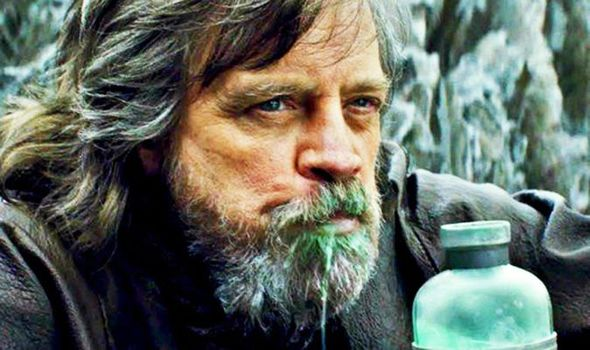

Star Wars Blue Milk

Ingredients:
- 2 cups whole milk
- 1 cup ice cubes
- 1 tablespoon blue fruit punch powder
- 1/4 teaspoon vanilla extract
- blue food coloring as needed
Instructions:
- Combine milk, ice, fruit punch powder, and vanilla in a blender. Cover and blend until smooth.
- Stir in a few drops of blue food coloring until desired color is achieved.
- Poor into glasses and serve immediately.